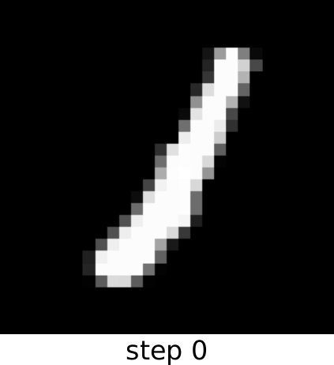
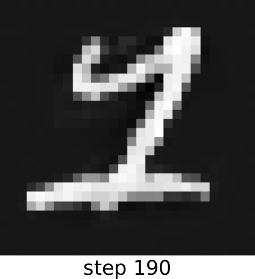
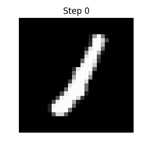

Implicit Manifold Diffusions: Stochastic Dynamics from Point Clouds
> If you only have samples from a manifold, can you still construct the right stochastic dynamics on it?
Figure 1: Sample diffusion process constructed using IMDs from data points drawn from $\mathbb{S}^2 \subset \mathbb{R}^3$.
The process does not have access to any geometric information of $\mathbb{S}^2$ beyond the point cloud.
This post is a shorter and more intuitive exposition of Implicit Manifold-valued
Diffusions (IMDs), first introduced in this arXiv preprint.
Data may live on a manifold, but in practice all we ever see is a point cloud. So if we want Brownian or Langevin-type motion that truly follows the geometry of the data, we face an immediate problem: the manifold itself is unknown. Implicit Manifold Diffusions (IMDs) tackle this setting directly. Instead of assuming access to charts, projections, or tangent spaces, they construct intrinsic stochastic dynamics from samples alone, turning manifold diffusion into a data-driven operator estimation problem.
Manifold SDEs
Under the manifold hypothesis, we posit that data lies on a lower-dimensional smooth surface (manifold) $\mathcal{M}$ despite being represented in Euclidean space.
A guided diffusion process on a manifold $\mathcal{M}$ admits the SDE
\begin{equation}
dZ_t = b(Z_t)dt + dB^\mathcal{M}_t,
\end{equation}
where $b$ is a drift and $B^\mathcal{M}_t$ is Brownian motion constrained to $\mathcal{M}$. To perform on-manifold stochastic dynamics, we typically
use projectors $P_\mathcal{M}:\mathbb{R}^n\to\mathcal{M}$ [1], [2] or approximations thereof [3] to approximate $B^\mathcal{M}_t$.
In the case of data manifold $\mathsf{M}$, however, we do not know its explicit form or projectors...
This now prompts the question: how do we compute $B^\mathsf{M}_t$ if we do not know $\mathsf{M}$ explicitly?
Enter Implicit Manifold Diffusions.
The conceptual shift that IMDs leverage is the operator-theoretic backbone of diffusion processes: every diffusion process is generated by a second-order
elliptic differential operator $L$ [4]. IMDs thus construct stochastic dynamics that respect the geometry of $\mathsf{M}$
by estimating $L$ from the point cloud $X_N = \{x_i\}_{i=1}^N$ via a kernel method, analogous to Diffusion Maps. From this estimated $L$, the new stochastic dynamics are given by
\begin{equation}
dY_t = \left(b(Y_t)+L(Y_t)\right)dt + \Gamma^{\frac{1}{2}}(Y_t)dW_t,
\end{equation}
where $\Gamma$ is the carré-du-champ operator associated to $L$ and $W_t$ is $\mathbb{R}^n$-valued Brownian Motion.
Numerically, we consider $L$ and $\Gamma$ to be $N\times 3$ matrices, serving as lookup tables for their value at each data point $x_i$. A simple Euler-Maruyama scheme
suffices to produce stochastic dynamics that respect data manifold $\mathsf{M}$'s intrinsic structure (Fig. 1)
\begin{equation}
Y_{\ell+1} = Y_{\ell} + h\left( b(\bar{Y_\ell}) + L\left(\bar{Y_\ell}\right)\right) + \sqrt{h}\Gamma^{\frac{1}{2}}(\bar{Y_\ell})W_{\ell+1},
\end{equation}
where $\bar{Y_\ell} = \textnormal{argmin}_{x\in X_N}\left\{ \|x-Y_\ell\|_2^2 \right\}$ the closest point to $Y_\ell$ in the point cloud $X_N$.
On-Manifold Path Generation
Thanks to the tangential and on-manifold trajectories that IMDs generate, we demonstrate a smooth interpolation between two data points of the MNIST dataset.
In particular, we train the IMD on the point cloud of all 1 datapoints, and initialize at the data point

and set the drift to be a quadratic well around the data point

The following animation displays the produced trajectory

where we can observe that the transition from the initial to the final point is quite smooth.
References
De Bortoli, V., Mathieu, E., Hutchinson, M., Thornton, J., Teh, Y. W., & Doucet, A. (2022).
Riemannian score-based generative modelling
NeurIPS.
Boumal, N. (2023).
An introduction to optimization on smooth manifolds
Cambridge University Press.
Cheng, X., Jingzhao Z., and Suvrit S. (2022).
Theory and algorithms for diffusion processes on Riemannian manifolds
arXiv preprint.
Hsu, Elton P. (2002).
Stochastic Analysis on Manifolds
American Mathematical Society
Coifman, R. R., and Lafon, S. (2006).
Diffusion maps.
Applied and Computational Harmonic Analysis.
Song, Y., Sohl-Dickstein, J., Kingma, D. P., Kumar, A., Ermon, S., and Poole, B. (2021).
Score-Based Generative Modeling through Stochastic Differential Equations.
ICLR.